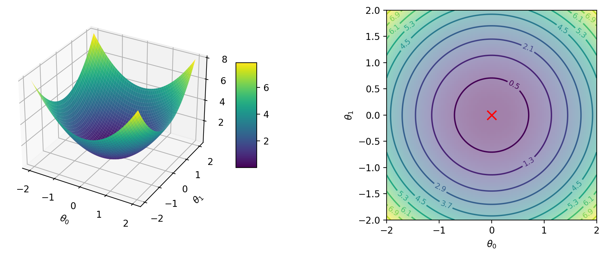
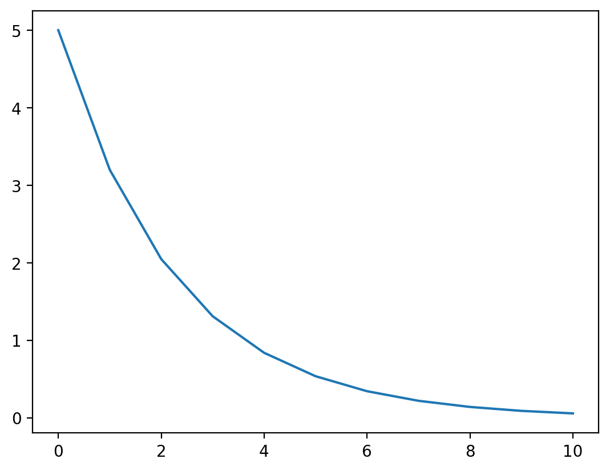
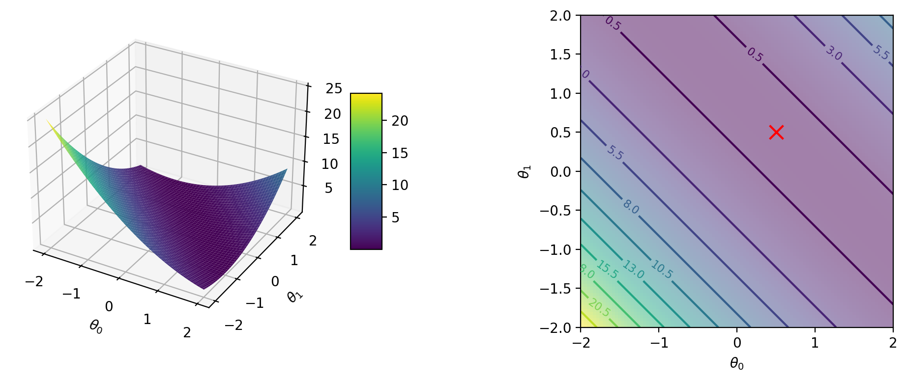
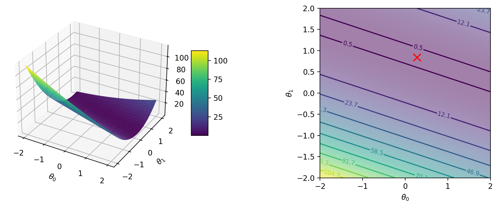

import jax.numpy as jnp
from jax import random, jit, vmap, grad, jacfwd, jacrev, hessian, value_and_grad
import matplotlib.pyplot as plt
%matplotlib inline
%config InlineBackend.figure_format = 'retina'Gradient Descent
Gradient Descent
# Simple 2D quadratic function
def f(theta_0, theta_1):
return theta_0**2 + theta_1**2# Plot surface and contour plots for f using jax.vmap
def create_plot(f):
theta_0 = jnp.linspace(-2, 2, 100)
theta_1 = jnp.linspace(-2, 2, 100)
theta_0, theta_1 = jnp.meshgrid(theta_0, theta_1)
f_vmap = jnp.vectorize(f, signature='(),()->()')
f_vals = f_vmap(theta_0, theta_1)
# Create a figure with 2 subplots (3d surface and 2d contour)
fig = plt.figure(figsize=(12, 4))
ax1 = fig.add_subplot(121, projection='3d')
ax2 = fig.add_subplot(122)
# Plot surface and contour plots
temp = ax1.plot_surface(theta_0, theta_1, f_vals, cmap='viridis')
# Filled contour plot and marked level set values using clabel
# Set 20 levels between min and max of f_vals
levels = jnp.linspace(0.5, int(jnp.max(f_vals))+0.5, 11)
contours = ax2.contour(theta_0, theta_1, f_vals, levels=levels, cmap='viridis')
ax2.clabel(contours, inline=True, fontsize=8)
# Fill using imshow
ax2.imshow(f_vals, extent=[-2, 2, -2, 2], origin='lower', cmap='viridis', alpha=0.5)
# Find the global minimum of f using jax.scipy.optimize.minimize
from jax.scipy.optimize import minimize
def f_min(theta):
return f(theta[0], theta[1])
res = minimize(f_min, jnp.array([0., 0.]), method='BFGS')
theta_min = res.x
f_min = res.fun
print(f'Global minimum: {f_min} at {theta_min}')
# Plot the global minimum
ax2.scatter(theta_min[0], theta_min[1], marker='x', color='red', s=100)
ax2.set_aspect('equal')
# Add labels
ax1.set_xlabel(r'$\theta_0$')
ax1.set_ylabel(r'$\theta_1$')
ax1.set_zlabel(r'$f(\theta_0, \theta_1)$')
ax2.set_xlabel(r'$\theta_0$')
ax2.set_ylabel(r'$\theta_1$')
# Add colorbar
fig.colorbar(temp, ax=ax1, shrink=0.5, aspect=5)
# Tight layout
plt.tight_layout()create_plot(f)Global minimum: 0.0 at [0. 0.]
# Gradient of f at a given point
def grad_f(theta_0, theta_1):
return grad(f, argnums=(0, 1))(theta_0, theta_1)grad_f(2., 1.)(Array(4., dtype=float32, weak_type=True),
Array(2., dtype=float32, weak_type=True))theta = jnp.array([2., 1.])
thetaArray([2., 1.], dtype=float32)f(*theta)Array(5., dtype=float32)jnp.array(grad_f(*theta))Array([4., 2.], dtype=float32)lr = 0.1
theta = theta- lr * jnp.array(grad_f(*theta))
thetaArray([1.6, 0.8], dtype=float32)f(*theta)Array(3.2000003, dtype=float32)# Gradient descent loop
# Initial parameters
theta = jnp.array([2., 1.])
# Store parameters and function values for plotting
theta_vals = [theta]
f_vals = [f(*theta)]
for i in range(10):
theta = theta - lr * jnp.array(grad_f(*theta))
theta_vals.append(theta)
f_vals.append(f(*theta))
print(f'Iteration {i}: theta = {theta}, f = {f(*theta)}')
theta_vals = jnp.array(theta_vals)
f_vals = jnp.array(f_vals)Iteration 0: theta = [1.6 0.8], f = 3.200000286102295
Iteration 1: theta = [1.28 0.64], f = 2.047999858856201
Iteration 2: theta = [1.0239999 0.51199996], f = 1.3107198476791382
Iteration 3: theta = [0.8191999 0.40959996], f = 0.8388606309890747
Iteration 4: theta = [0.6553599 0.32767996], f = 0.5368707776069641
Iteration 5: theta = [0.52428794 0.26214397], f = 0.34359729290008545
Iteration 6: theta = [0.41943035 0.20971517], f = 0.21990226209163666
Iteration 7: theta = [0.3355443 0.16777214], f = 0.14073745906352997
Iteration 8: theta = [0.26843542 0.13421771], f = 0.09007196873426437
Iteration 9: theta = [0.21474834 0.10737417], f = 0.05764605849981308# Plot the cost vs iterations
plt.plot(f_vals)
# Simple dataset for linear regression
X = jnp.array([[1.], [2.], [3.]])
y = jnp.array([1., 2.2, 2.8])
from sklearn.linear_model import LinearRegression
lr = LinearRegression()
lr.fit(X, y)LinearRegression()In a Jupyter environment, please rerun this cell to show the HTML representation or trust the notebook.
On GitHub, the HTML representation is unable to render, please try loading this page with nbviewer.org.
LinearRegression()
lr.coef_, lr.intercept_(array([0.9000001], dtype=float32), 0.19999981)# Cost function for linear regression using jax.vmap
def cost(theta_0, theta_1):
y_hat = (theta_0 + theta_1 * X).flatten()
#print(y_hat, y, y-y_hat, (y-y_hat)**2)
return jnp.mean((y_hat- y)**2)
# Plot surface and contour plots for cost function
#create_plot(cost)cost(2.0, 2.0)Array(16.826666, dtype=float32)(3**2 + 3.8**2 + 5.2**2)/3.16.826666666666668# Gradient of cost function at a given point
def grad_cost(theta_0, theta_1):
return jnp.array(grad(cost, argnums=(0, 1))(theta_0, theta_1))
grad_cost(2.0, 2.0)Array([ 8. , 17.466667], dtype=float32)def grad_cost_manual(theta_0, theta_1):
y_hat = (theta_0 + theta_1 * X).flatten()
return jnp.array([2*jnp.mean(y_hat - y), 2*jnp.mean((y_hat - y) * X.flatten())])grad_cost_manual(2.0, 2.0)Array([ 8. , 17.466667], dtype=float32)# Plotting cost surface and contours for three points in X individually
def cost_i(theta_0, theta_1, i = 1):
y_hat = theta_0 + theta_1 * X[i-1:i]
return jnp.mean((y_hat- y[i-1:i])**2)(cost_i(2.0, 2.0, 1) + cost_i(2.0, 2.0, 2) + cost_i(2.0, 2.0, 3))/3.0Array(16.826666, dtype=float32)from functools import partial# Plot surface and contour plots for cost function
for i in range(1, 4):
cost_i_p = partial(cost_i, i=i)
create_plot(cost_i_p)Global minimum: 0.0 at [0.5 0.5]
Global minimum: 0.0 at [0.44000003 0.88000005]
Global minimum: 0.0 at [0.28000003 0.84 ]

grad_cost_1 = grad(cost_i, argnums=(0, 1))
grad_cost_1(2.0, 2.0)(Array(6., dtype=float32, weak_type=True),
Array(6., dtype=float32, weak_type=True))jnp.array(grad_cost_1(2.0, 2.0, 1)), jnp.array(grad_cost_1(2.0, 2.0, 2)), jnp.array(grad_cost_1(2.0, 2.0, 3))(Array([6., 6.], dtype=float32),
Array([ 7.6, 15.2], dtype=float32),
Array([10.4 , 31.199999], dtype=float32))